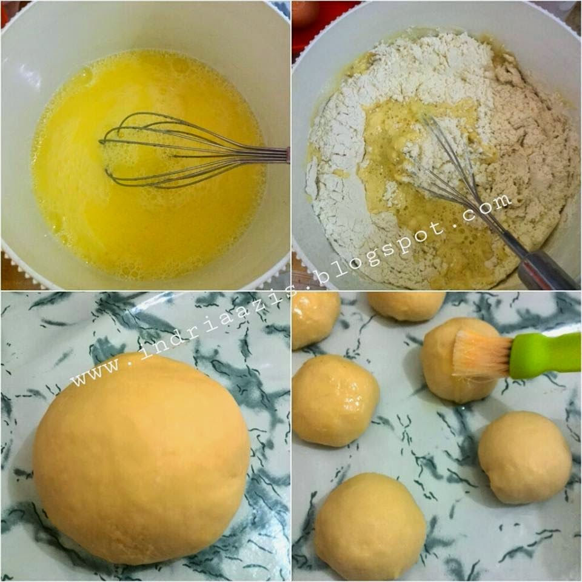
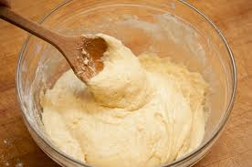
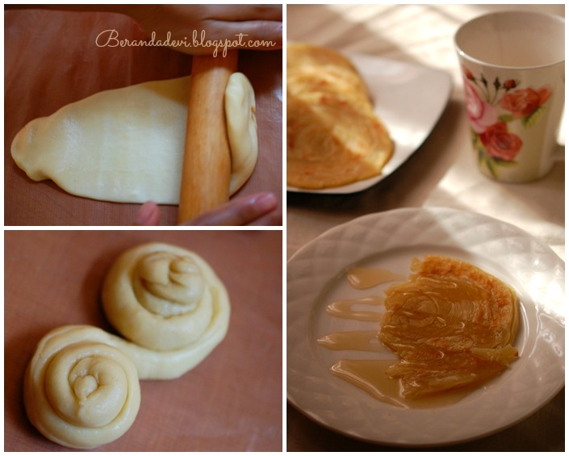

Bahan-bahan:
- 250 gr tepung terigu
- 1 butir telur
- 3 sdm margarin, lelehkan
- 100 ml air hangat
- 2 sdm susu bubuk (optional)
- 1/2 sdt garam
- margarin leleh untuk olesan
- minyak untuk merendam
Langkah-langkah:
- Campur semua bahan roti jadi satu 
- Uleni sampai kalis (bisa pakai tangan), lumuri tangan sesekali dengan tepung (tapi jangan menambahkan tepung) uleni terus sampai adonan kalis 
- Kalisnya adonan canai tidak sekalis adonan roti ya, kira-kira seperti ini sudah cukup 